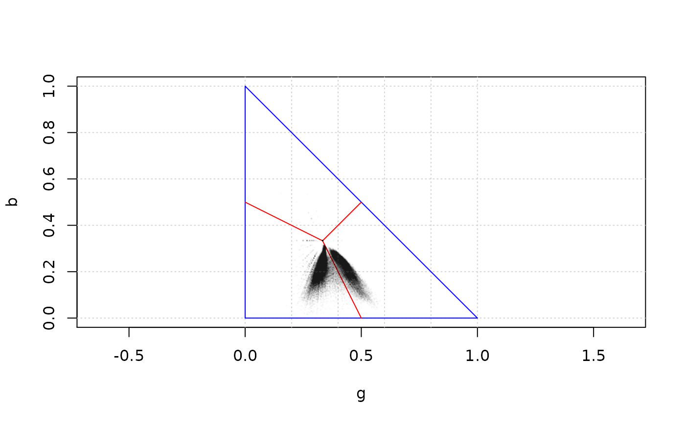

This function is a wrapper for function points() in package
graphics for plotting the pixels of a transformed rgb image on the
triangular diagram previously created by plot_rgb_plane().
plot_pixels(image_rgb, x_axis, y_axis, ...)
| image_rgb | an object produced by |
|---|---|
| x_axis | a character string indicating which colour variable use as x. |
| y_axis | a character string indicating which colour variable use as y. |
| ... | additional graphical parameters, mainly to set the colour
( |
The function does not return any value.
It is advantageous to specify a colour such as "#00000005"
which is black but almost transparent. In this way a kind of density plot
is created because the clustering of points creates areas of darker colour.
Note that a colour without specific transparency information defaults to an
opaque colour, so "#000000" is the same as "#000000ff". The
colours can be specified in any form understandable by
grDevices::col2rgb, but the hexadecimal string allows setting the
colour transparency and it is the preferred style. Note also that the
points are plotted using pch = ".", as any other symbol would clutter the
graph.
Warning: plotting several million points in an R graph is a slow process. Be patient or reduce the size of the images as much as possible. Having a nice smartphone with a petapixel camera sensor is good for artistic purposes, but not always for efficient scientific work.
# Plotting the pixels of the example image included in this package ivy_oak_rgb <- read_image(system.file("extdata", "IvyOak400x300.JPG", package = "pixelclasser")) plot_rgb_plane("g", "b")plot_pixels(ivy_oak_rgb, "g", "b", col = "#00000005")